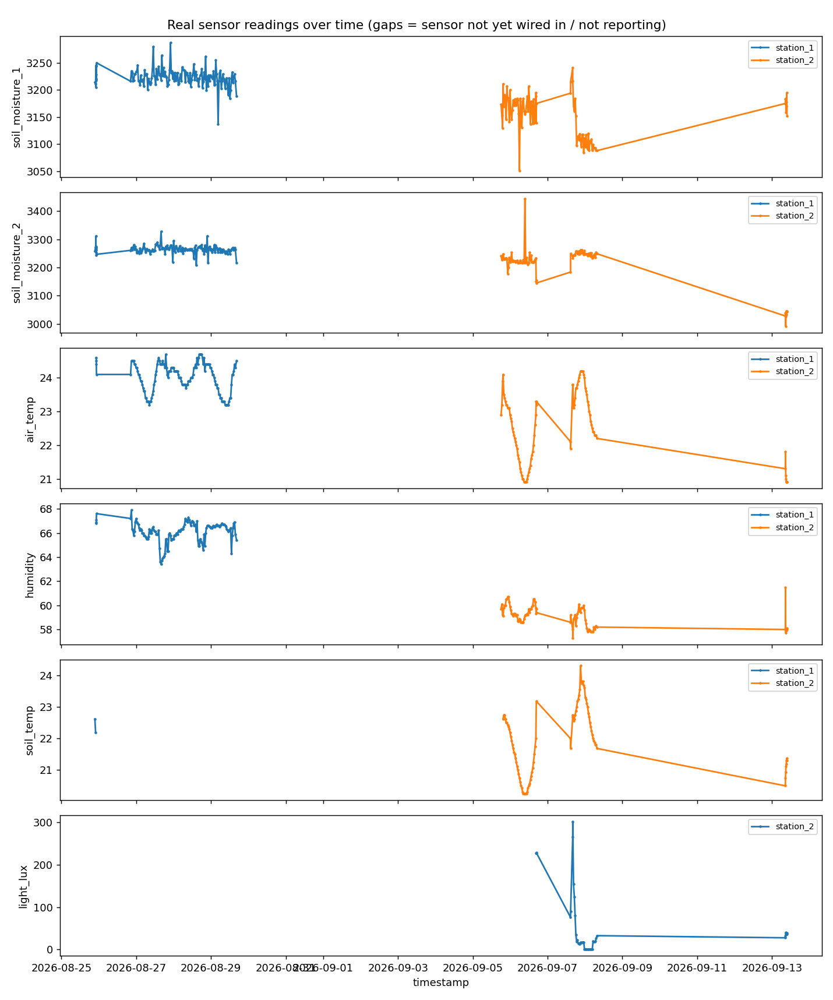

A real IoT sensor network and decision-support pipeline for a family cherry farm in Lodi, CA. This page reads real project data committed to the repo — nothing here is live (GitHub Pages can't run the Python pipeline), so every section says as-of-when it was generated.

analysis/01_eda.py.The chill/GDD models checked against actual outcomes, using real CIMIS station data (station 262, Linden) — see analysis/02_real_calibration_2024_2026.py.
Buds get far more cold-sensitive as they develop. Source: Michigan State University Extension's critical spring temperature table (10%/90% bud kill). The live frost-alert monitor (analysis/04_frost_alert_monitor.py) checks the real 7-day NWS forecast against this table — run it locally for current status; a static page can't run it for you.
| Bud stage | 10% kill (°F) | 90% kill (°F) |
|---|
Weather 6+ months out isn't predictable with real confidence — but a very strong El Niño is forecast (NOAA CPC, >90% probability) with the wet season peaking Jan–Mar 2027, right in this orchard's bloom window. Real 2026 CIMIS data also shows heat spikes in June–July landing inside the literature-documented flower-bud-initiation window for next year's crop — unverifiable from farm sensors since they weren't deployed yet during that window.